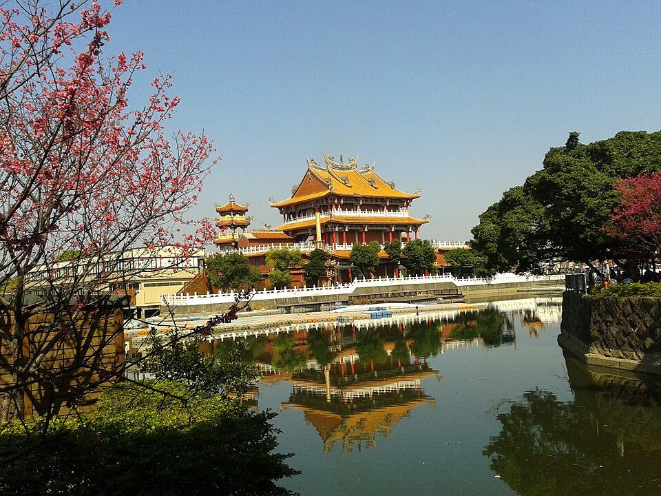

地景與水利
追蹤水源、辨認進水口、出水口、閘門或可能被地下化的水路，建立埤塘的供水邏輯。
運算思維系統分析以龍潭大池為案例，從水利系統、生態觀察、歷史文化、土地變遷與互動導覽，建立一份可在 VS Code 開啟、可實地執行的田野專題網站。
這份網站把龍潭大池視為一個「水利—生態—文化」系統。你可以用它規劃踏查路線、拍照任務、訪談方向，以及互動導覽設計。
追蹤水源、辨認進水口、出水口、閘門或可能被地下化的水路，建立埤塘的供水邏輯。
運算思維系統分析
用植物、鳥類、兩棲類、蜻蜓與豆娘作為觀察線索，紀錄棲地、水質與外來種問題。
環境教育物種辨識
從菱角潭、菱潭陂、靈潭陂到龍潭大池，連結地名、南天宮、龍舟與地方生活記憶。
地方認同地名考證用 VS Code 開啟整個資料夾，安裝 Live Server，從 index.html 啟動。田野照片若是你自己拍的，可直接覆蓋 assets/img 中的同名圖片，網站版面會自動套用。